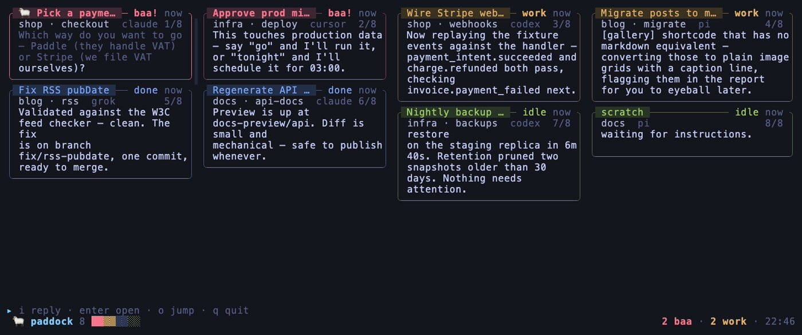
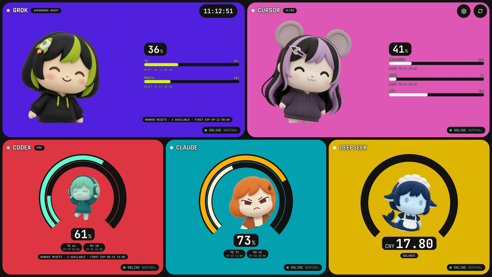

A card-wall feed for your herdr flock. Blocked agents bleat to the top. Each card is the agent’s output, cleaned. Plain SSH — no relay, no web server.
github.com/neyham/herdr-paddock
A local desktop cockpit for Claude, Codex, Grok, Cursor, and Antigravity usage windows, plus DeepSeek API balance. No dashboard account. No telemetry.
github.com/neyham/ai-usage-dashboard